Enhancing Analog Signal Generation by Digital Channel Using Pulse-Width Modulation
Angelo Zucchetti, Advantest
Paper ID: 138518 December 2012
Introduction
Presented in this article is a technique for generating an analog signal using a digital pin driver. This technique is similar to the one presented in previous articles [1] where the delta sigma modulation approach based on pulse density modulation was introduced. The technique described in this article is based on Pulse-Width Modulation (PWM). This is widely used in many applications, like sensors and microcontrollers. The analog signal generation is obtained by modulating the duty-cycle of a digital pulse stream and filtering it with a suitable low-pass filter. In this technique sigma-delta noise-shaping is also applied, to shift the quantization noise outside the filter pass-band.
With the PWM performance improvements have been obtained with respect to the previous methodology. The analog signal max amplitude is larger, linearity and signal-to-noise (SNR) performances are improved.
The software support for Per Pin Signal generation based on PWM has been included in V93000 Smartest starting from release 7.2.0.
Overview of Pulse Width Modulation
Pulse Width Modulation is based on modulating the duty cycle of a digital pulse. The analog signal-amplitude is mapped into the duty-cycle of a pulse by a defined transfer function. The easiest transfer function is just a linear function. In figure 1 this mapping is shown for a Sine waveform of amplitude Vpp and offset Vcm.
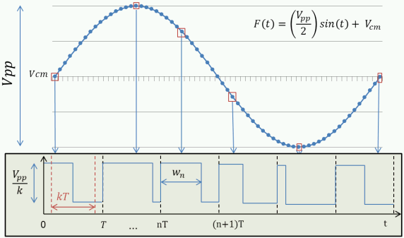
Figure 1: Pulse Width Modulation Amplitude to Duty-Cycle Mapping
The parameter k is called the "modulation depth" and represents the percentage of the pulse period used for the modulation. It can also be seen as the ratio between the analog-signal amplitude and the pulse amplitude. As the figure shows an analog waveform F(t) with common mode Vcm can be sampled at a given frequency fs and mapped into a digital-pulse stream. The sampling frequency determines the period of the digital pulses T=1/fs, while the time-duration of n-th pulse wn is given by:
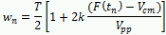
The pulse duration wn defines the position of the falling edge of the digital pulse, while the trailing edge is always placed at the beginning of the period. The edge placement can be done with a minimum resolution given by the driver hardware capabilities. For example, with the Advantest Pin Scale 1600 digital card a pulse period is generated by a series of bits at the maximum speed of the card, which is 1600 Gbps. This leads to a minimum edge placement resolution of 625 ps. However, a better resolution can be achieved using higher-speed digital cards such as the Pin Scale 9G which has a maximum speed of 8 Gbps, which leads to a resolution of 125 ps.
The finite edge placement resolution leads to a quantization of the pulse duration wn. This quantization process is equivalent to an analog-to-digital conversion performed by and ADC with a number of bits given by:
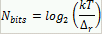
where Δr is the edge-placement resolution.
For example, sampling an analog waveform at the frequency of 200 ksps, with a modulation depth 0.8 and using a Pin Scale 1600 digital card gives a resolution of the equivalent ADC equal to 12.6 bits. An estimation of the noise generated by this quantization process can be evaluated using the definition of Effective Number of Bits:
SNR = (6.02 Nbits + 1.76) dB
which gives for the SNR a value around 77.6 dB.
Noise Shaping
The quantization process related to the Pulse Width Modulation, leads to a flat noise floor (see figure 3). As it has been described for the Pulse-Density Modulation, a noise shaping technique can be apply to lower the noise level for the lower frequency and push it out to the higher frequency, where it gets attenuated by the analog low-pass filter.
For the noise shaping a multi-bit Delta-sigma modulator is used. In the block diagram of figure 2 such a modulator is shown, where for simplicity a first order modulator is considered.
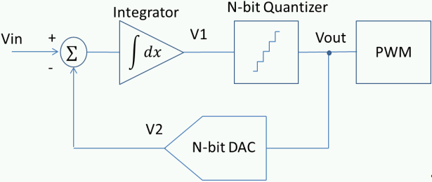
Figure 2: Multi-bit delta-sigma modulation
The sampled voltage Vin goes through a signal integrator and the integrated voltage V1 is quantized by a N-bit quantizer (Vout). The value is the output of the Pulse Width modulator and to an N-bit DAC. The DAC converts the quantized voltage into an analog voltage V2. For the next code generation the difference between a new Vin sample and V2 is calculated (delta) and fed into the integrator (sigma) to generate a new voltage V1 for the Quantizer.
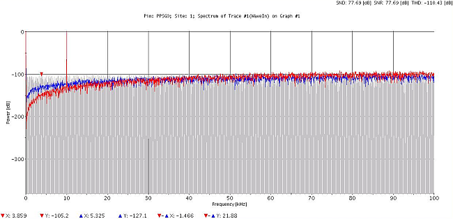
Figure 3: 10 kHz Sine wave spectrum with no sigma-delta modulation (gray),first order delta-sigma modulation (blue) and second order delta-sigma modulation(red).
In figure 3 the spectrum of a quantized 10 KHz sine wave sampled at 200 ksps is shown. The spectrum obtained without applying any modulation is compared with the noise-modulated spectrum obtained by running the first and second order delta-sigma modulator. As expected the noise floor is lowered by the noise-shaping, and the effect is more relevant if the modulator order is increased [2].
For the PWM a higher order delta-sigma modulation is used, to increase considerably the signal to noise performance inside the pass-band of the low-pass filter.
Carrier-Pulse Distortion
After the noise-shaped quantization the calculated codes (Vout) are translated into pulses of different time-duration wn. Figure 4 shows an example of this stream where in the x-axis the cycle number if reported.
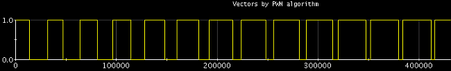
Figure 4: PWM stream
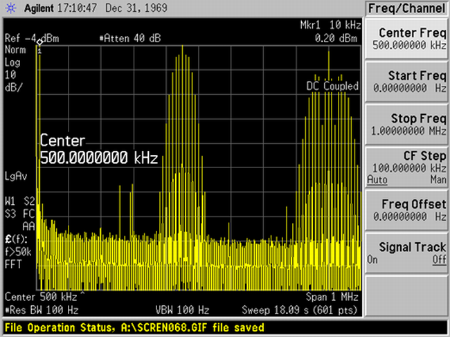
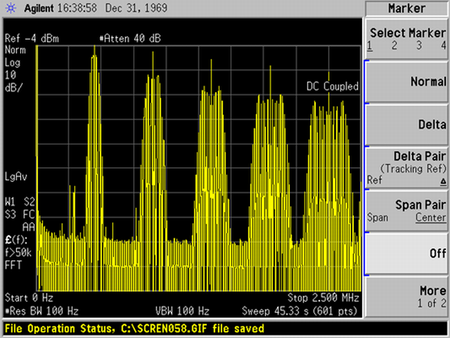
Figure 5: Pulse-stream Spectrum - no-filtering
In figure 5 the spectrum of the pulse stream captured before the analog filter is shown. This stream is designed to generate a 10 kHz Sine analog waveform, with a sampling frequency of 150 ksps. The spectrum analyzer screenshot on the first size shows the spectrum of the pulse stream for a frequency up to 1 MHz. At 10 kHz (marker position) the signal generated by the modulation can be seen. The peak in the middle of the spectrum located at 450 kHz is the pulse-carrier frequency. For the analog signal generation the code frequency has been chosen to be 3 times the sampling frequency. This is done automatically by the per-pin signal generation software. first and second of the carrier frequency at a distance of 10 kHz from each other there are inter-modulation components.
The screenshot on the right shows the spectrum of the same pulse-stream taken up to 2.5 MHz. In this screenshots the harmonics of the carrier-pulses surrounded by the corresponding intermodulation components can be seen.
From the performance point of view, the carrier pulse fundamental frequency and harmonics do not pose any issue. This is due to the fact that these frequencies are multiple of the sampling frequency. The spectrum calculated from the captured samples is limited to the Nyquist frequency fs/2. The higher frequencies are folded back (aliased) inside the Nyquist interval. The frequencies which are multiple of fs gets folded into the DC component, which is not considered in the Signal-to-Noise measurements.
Unfortunately this does not occur for the intermodulation components, which if not properly filtered, will be aliased into the low-frequency segment of the spectrum. For this reason it is important to design a filter which has enough attenuation for suppressing these components below the noise-floor. Usually high order Low-pass filters are designed, which allows for a proper attenuation on a wide frequency range.
If the attenuation provided by the filter is not enough the data stream can be generated with a higher carrier frequency (always multiple of the sampling frequency) moving the intermodulation components to higher frequency, where the attenuation is larger.
Low Pass Filter Reference Design
A key element for the Per Pin Signal Generator performance is the low-pass filter. A non-properly designed filter can generate an unexpected large distortion in the output analog signal and can lead to very poor performance. For this reason a set of pre-designed filters have been designed and measured. These filters are all available on a single daughter board, which can be used for performance evaluation and engineering prior to the production DUT board design.
The Per Pin Signal Generator loadboard can be seen in figure 6.
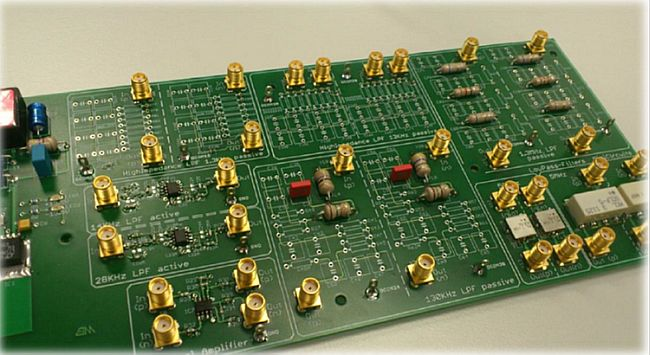
Figure 6: Per Pin Signal Generator Reference Daughter Board
Key features for a properly designed filter for the Per Pin Signal Generation should be:
- The pass-band should be flat, to minimize filter-induced distortion.
- The transition-band should be steep to assure attenuation shaped quantization noise which is increasing outside the filter Pass-Band.
- The stop-band should have a high attenuation factor over a long frequency range to attenuate quantization-noise and the intermodulation and spurious components.
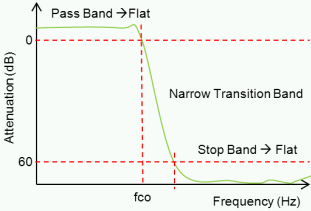
Figure 7: Ideal Low Pass Filter
Per Pin Signal Generator Tool
Starting with the V93000 SmarTest release 7.2.0 a tool that automatically generates the Per Pin Signal Generator Setup has been developed. This tool can be started from the Signal Analyzer Tool and provides an easy –to use Graphical User Interface (GUI), as shown in figure 8.
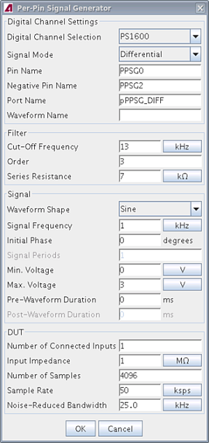
Figure 8: Per Pin Signal Generator GUI
The GUI is divided into 4 sections:
- In the first section the digital channel parameters can be defined. Here the user can specify if the output signal is single ended or differential. He can also specify the name of the used digital pins and the name of the port defined for these pins. The pins used for the per-pin signal generation, run with their own period, which is near to the maximum rate of the digital card. For this reason they need to be run in a separated port, to allow for setting an independent period for the other pins of the device.
- The second section is dedicated to the definition of the low-pass filter. The parameters here are the filter cut-off frequency, the order of the filter and the series resistance of the filter.
- In the third section the analog signal is defined. The user should specify the waveform shape. Sines, Ramp-up, Ramp-down and Triangular waveforms are supported. Once this is defined the relevant parameter for the waveform definition need to be given. For example, if a Sine waveform is chosen, the user has to define the signal frequency and the initial phase. In this section the signal max and min voltage also need to be specified. In this section a pre-waveform and post-waveform duration can be optionally given. The pre and post-waveform is particularly useful for the ramp generation. For this waveform shape, the pre and post waveform is generated just by looping the first and the last code of the ramp, respectively, for the specified amount of time. This can be used as an example for charging the filter before starting the ramp.
- Finally the fourth section is dedicated to the DUT relevant parameters. First the number of connected input and the DUT impedance can be specified. These two parameters, together with the low-pass filter series resistance, are used by the tool to calculate the digital channel levels needed to generate the specified analog signal. The following parameters are the number of samples and the sampling frequency and the Noise-reduced bandwidth. The last parameter is set to the Nyquist frequency per default but a different value can be specified. This parameter is the relevant bandwidth considered for the SNR calculation.
Details on the input parameters and the GUI operation can be found in the Technical Documentation Center[3].
Once the parameters have been set the calculation is started by pressing the ok button. The calculation result is the output of the Signal Analyzer Tool as shown in figure 9.
The tool output the bit stream for the PPSG pins and the expected waveform. The download Action of the Signal Analyzer Tool can be used to download the bit-stream. In the console run-time errors and warnings from the stream generation are displayed.
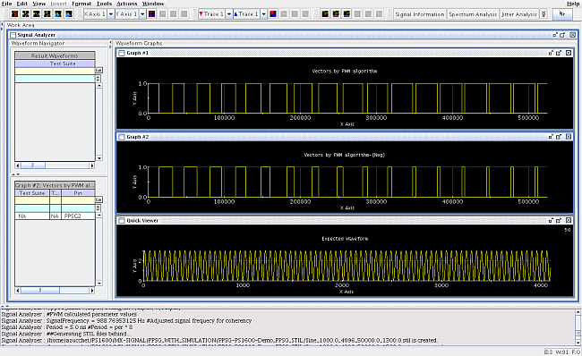
Figure 9:Signal Analyzer Tool: Per Pin Signal Generator Output
The tool also generates a STIL file containing all the setup information. If the V93000 SmarTest Data Link Stilreader is installed on the workstation, the STIL file is compiled and a One Test-Suite Test Program is generated. Then the setups can be merged into the existing test program manually or by using the V93000 SmarTest Test Program Manager.
Performance Example
In this section some performance results produced by using the Pin Scale 1600 digital channels are shown.
The first example is a 0 to 6 Volts voltage ramp (figure 10). The ramp was generated by the PWM Per Pin Signal Generator. The sampling frequency for the generation was set to 200 ksps and the number of samples to 16384. The 1.3 kHz low-pass filter of the PPSG reference DUT board was used. For the measurement the LF Digitizer of MB-AV8+ was used setting the sampling frequency at 200 ksps and the voltage offset at 3 Volts. The load impedance is 1 MOhm.
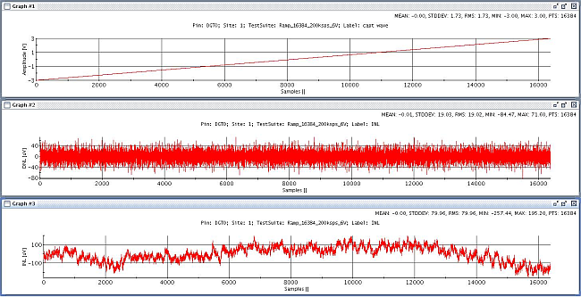
Figure 10: 0 to 6 V Voltage Ramp - Linearity
In the first graph of figure 10 the raw digitized ramp is shown. Below the DNL and INL in uV can be seen. The DNL is 84 uV while INL is 256 uV. This corresponds to a resolution larger than 14 bits.
The second example is a 10 kHz Sine wave of 6 Volts peak to peak generated at 150 ksps with 4096 samples (figure 11). Here the 14 kHz Active Low-pass filter of the PPSG reference DUT board has been used. For the measurement again the LF Digitizer of MB-AV8+ was used setting the sampling frequency at 200 ksps and the voltage offset at 3 Volts. The load impedance is 1 MOhm
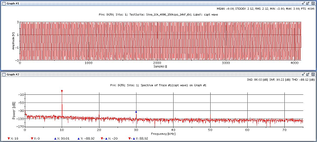
Figure 11: Sine 10 kHz 6 V peak to peak
From the measured data shown in figure 11 the spectrum of the signal can be calculated. This shows a dynamic range of 88 dBc. The SNR is 90 dB and THD is -88 dBc, which gives an equivalent resolution (ENOB) of 14 bits.
The last example is a 1 MHz Sine wave of 3.3 Volts peak to peak generated at 10 Msps with 4096 samples (figure 12). Here the 1.3 MHz Low-pass filter of the PPSG reference loadboard has been used. For the measurement the VHF Digitizer of MB-AV8+ was used setting the sampling frequency at 10 Msps and the voltage offset at 1.65 Volts. The load impedance is 10 kOhm and the embedded analog 15 MHz anti-aliasing filter is used.
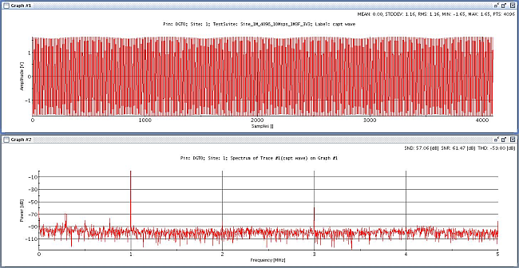
Figure 12: Sine 1 MHz 3.3 V peak-to-peak
With this example the limit of the PWM modulation is reached. The tool allows generating setups for signals of up to 50 MHz, but above 1 MHz the PWM it is not used anymore. The generated setup is just a clock pattern with a frequency defined by the signal frequency. The result shows a SFDR of about 60 dBc. The calculated SNR is 61 dB, and the THD is -59 dBc. The equivalent resolution (ENOB) for this setup is 9 bits.
Summary and conclusion
This article is a novel technique for an analog signal generation by a digital pin driver is introduced. The principle of the Pulse width modulation and multi bit delta-sigma modulation are presented. The performance requirement for the analog low-pass filter has been discussed. The software support of this feature introduced with V93000 SmarTest 7.2.0 has been described and some examples are given to shown the performance of this technique.
This technique is being applied in testing the analog block of low-cost devices, where the infrastructure-cost reduction lead by the replacement of a costly analog board with a digital channel is important.